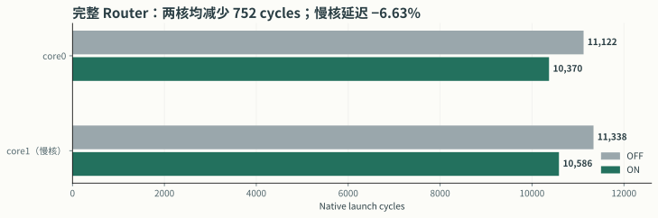
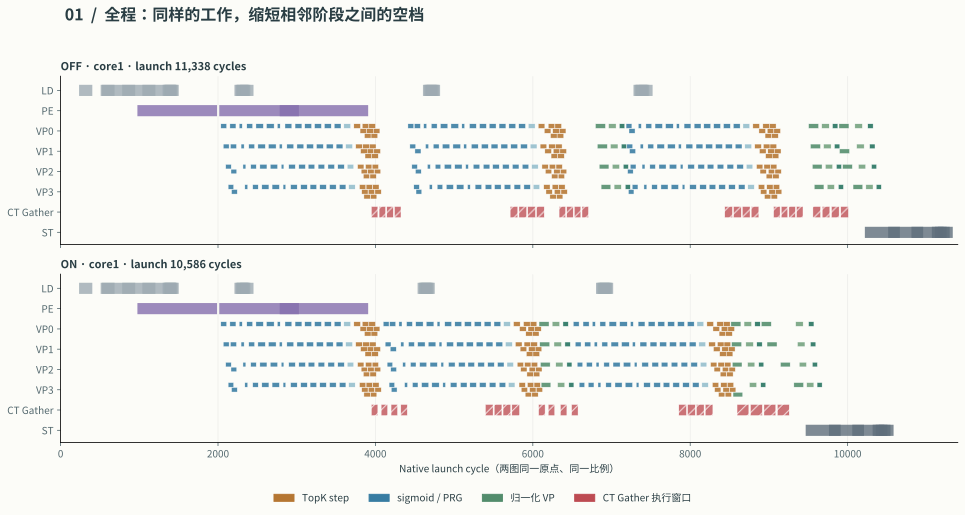
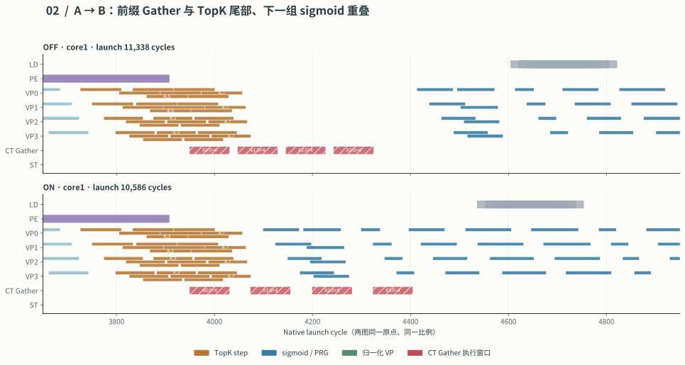
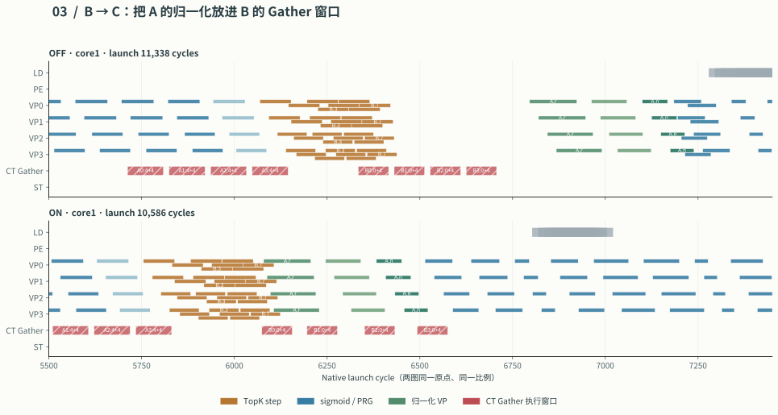
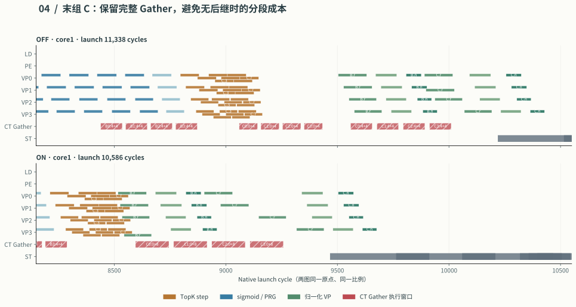
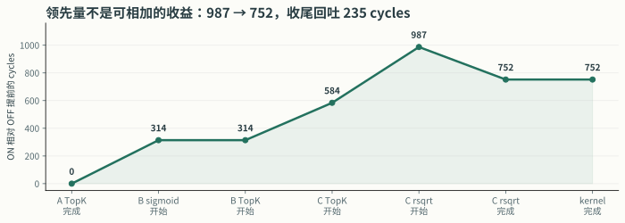
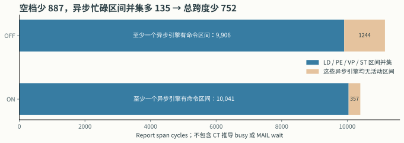

StreamTopKGather
让 TopK、Gather 与 VP
在同一条流水中交错
让 CT 按专家 ID 取分数时，四个 VP 已经有下一组 token 的 sigmoid 可算。这就是 GLM5.3Flash Router 开启 wave-overlap 的目的。编译器把一波独立的 VP 指令排在一小段 CT Gather 前面，让向量计算覆盖部分标量取数时间。慢核上的第一组 TopK 仍在第 4074 拍结束，下一组 sigmoid 却提前了 314 拍。
ZeusV3 的一个 core 怎样同时做 Gather 和向量计算
一个 core 按程序顺序派发指令，后端有分工不同的执行单元。这个 Router 用 PE 做矩阵乘，用四个 VP 算 sigmoid、TopK 和归一化，用 LD / ST 搬运数据。CT 负责标量运算与控制。在这份汇编里，按专家 ID 回查原始分数的 Gather 展开成一串 CT 指令，逐个提取索引、计算地址、读取分数并写回。理解这项优化，需要把共享的派发入口和可异步工作的执行单元放在同一张图上看。
同一个 core 的指令流
│
▼
顺序派发 dispatch ──┬── CT 标量指令：取 ID、算地址、读分数
▲ │
│ └── VP 预解码 → VP 队列 → issue → VP0…VP3 → done
ct_inst_rdy ↑
控制派发握手 start（图中蓝条左端）CT 能拖住后续 VP，是因为两者共用派发入口。正常运行时，RTL 的握手条件可简写为 dispatch_rdy = inst_rdy & ct_inst_rdy。连续的单周期 CT 指令逐条占用派发槽。遇到等待 L2 读回或 mailbox 同步的 CT 指令，ct_inst_rdy 还可能拉低多个周期。即使后面一条 VP 指令的数据已就绪，前端也要按序等到能派发它。
已经越过入口的命令，可以在 CT 忙时启动。VP 队列向执行单元发送命令称为 issue，取决于本队列的 mailbox、credit 和 FIFO 等条件。执行单元随后开始处理命令，trace 将这个时刻记作 start。把独立工作提前派发，就能让队列在 CT 取数期间继续向 VP 供给命令。
编译器怎样利用这个时间差
设 A、B 是相邻的两组 token。A 的 Gather 必须等 A 的 TopK 给出专家 ID，但 B 的 sigmoid 只需要 B 的投影结果。基础 StreamTopKGather 在选出前 4 个专家后发布索引，让 CT 可先取这 4 个分数，同时 VP 继续选后 4 个。可选的 wave-overlap 策略再调整前半段 Gather 的插入点，让 B 的独立向量工作更早通过公共入口。
公共前端看到的顺序（只画 A → B 交界）
OFF A0 取前4项 → A1 取前4项 → A2 取前4项 → A3 取前4项 → B 的第一波 VP …
ON B 的第一波 VP → A0 取前4项 → B 的第二波 VP → A1 取前4项 …这例的一波包含同一计算阶段的四条指令，每条负责不同的一行，分别派往 VP0～VP3。等完整一波通过，再插入一行的 Gather，四个 VP 就都有机会在接下来的 CT 区间工作。pass 保留已有 VP 操作的相对顺序。对于没有合格后继工作的末组，它保留一次完整 Gather，以省去拆分和发布快照的固定开销。
RTL 对照位置为 inst518_inst_dispatch.v:737（公共派发）、inst518_vp_inst_predecode.v:490（接收 VP 指令）和 inst518_queue_vp.v:544（队列 issue 条件）。下文的周期均来自本次 Router 的 CycleSim trace。
01 / RESULT先看这次真实跑出来的结果
对同一份生产 Router 源码生成 TTIR，使用同一个编译器二进制编译两次。两组共同开启 --inject-sync-verify-vp-out-of-place，唯一变化是 --stream-topk-gather-wave-overlap。随后直接组装这两份实际汇编，使用相同地址、相同输入与同一个 CycleSim 二进制运行双核 case；没有手改指令。

max(core0 cycles, core1 cycles)。固定工作量下相当于约 1.071× kernel 吞吐；这里只测独立 Router，不代表 MoE 或完整模型吞吐。输入是固定 seed=300802 的合成 fixture：先生成 32 行 hidden，再生成 gate 和 bias，取前 24 行；不是模型录制激活。BF16 输入 / 权重，FP32 bias，输出缩放 2.5，关闭 transport、ID remap、calibrated sigmoid 与 Shared 融合。每个版本实跑一次、各含双核；两核正常结束、引擎失败为 0、mailbox 清空、trace 未截断。没有新跑 RTL/VCS、板卡或整模。
02 / PROBLEMTopK 选的是带 bias 的分数，归一化用的却是原分数
每个 token 先计算 Router projection，再经过 sigmoid。选择专家时加上纠偏 bias；输出路由权重时，用选中的专家 ID 回查未加 bias 的 sigmoid 分数，然后归一化。因此 TopK → Gather 是真实的数据依赖，不能把 TopK 输出的 biased value 直接当最终权重。
这里的 Gather 不是又启动一个向量 Gather 引擎。实际汇编先把 TopK packet 的索引搬入 VReg，再逐项提取 ID、乘 4 算地址、读 FP32 score，最后写回结果 VReg。它既要等索引就绪，又会让后面的 VP 指令暂时拿不到发射机会。
// 实际 ON 汇编 L634 起；展示第一个索引，后续再处理 17、18、19。
CT_VMOV_VR_[RR:R] VRx[2] RRa[15] Rb[26] // read prefix packet
CT_VMOVM_R_VR[I] Rx[26] VRa[2] Imme[16] // expert ID 0
CT_MULU_R_R_I Rx[26] Ra[26] Imme[4] // FP32 byte offset
CT_ADD_R_R_I Rx[26] Ra[26] Imme[116416] // source score row
CT_MOV_R_[R] Rx[26] Ra[26] // load original score
CT_VMOVM_VR[I]_R VRx[2] Ra[26] Imme[0] // output slot 0
// ... indices 17, 18, 19 ...
CT_VMOV_[RR:R]_VR ... // store gathered prefix03 / MECHANISM先保存前 4 个赢家，让后 4 步继续
原生 TopK=8 展开为 8 条 topk_step。同一个 lane 的各步沿 Mask RAM 状态继续选下一个赢家；最终一步发布结果并释放状态。StreamTopKGather 在第 4 步（ordinal=3）额外发布一份私有快照，但不清掉 Mask RAM，因此第 5～8 步仍继续原来的 recurrence。
pass 将原来的 Gather(K=8) 分成 Gather(K=4, offset=0) 与 Gather(K=4, offset=4)。前半段使用新快照，后半段仍使用最终 packet。后半段写回保持 RMW（read-modify-write）语义，避免覆盖已经写好的前半段。
04 / POLICYON 同时启用两项策略：穿插完整波次，跳过末组拆分
T24 在本例分给两个 core，每核 12 个 token，再按 4 行分为 A、B、C 三组。一个 wave 是一条相同阶段的 VP 操作在 lane0～3 上各发射一次。pass 只在完整波次之后插 Gather，不把 CT 工作插到半个四-lane 波次中。
| 层级 | A / B 组 | C 末组 |
|---|---|---|
| StreamTopKGather 改写前 | 只在末步发布；Gather 8 | Gather 8 |
| 本次 OFF：基础流式方案 | step3 多发布；四个 prefix Gather 连续插入 | 仍拆成 4 + 4 |
| 本次 ON：wave-overlap | 完整 VP wave → 一个 prefix Gather，交错推进 | 没有合格预取后继，保留 Gather 8 |
OFF 的 A → B 派发顺序
dispatch A.TopK step0..7, all lanes
Gather A0 prefix
Gather A1 prefix
Gather A2 prefix
Gather A3 prefix
B.sigmoid wave0, lanes0..3
B.sigmoid wave1, lanes0..3
B.sigmoid wave2, lanes0..3
B.sigmoid wave3, lanes0..3
...
B.TopK step0, step1
Gather A suffix, all lanes
B.TopK step2..7ON 的 A → B 派发顺序
dispatch A.TopK step0..7, all lanes
B.sigmoid wave0, lanes0..3
Gather A0 prefix
B.sigmoid wave1, lanes0..3
Gather A1 prefix
B.sigmoid wave2, lanes0..3
Gather A2 prefix
B.sigmoid wave3, lanes0..3
Gather A3 prefix
...
B.TopK step0, step1
Gather A suffix, all lanes
B.TopK step2..7以上是从实际 IR / 汇编抽出的调度示意，省略配置、地址计算和 MAIL。两组共同保留 gather-vp-prefetch-waves=2：下一组 TopK 的前两步会早于上一组 suffix Gather。这个已有机制不能再算作 wave-overlap 开关的新功能。
同样不能理解为“Gather A0 必须配 B0”。A0/A1/A2/A3 是被回收分数的行；每个完整波次都向四个 VP lane 发指令。pass 维持原有 VP 操作与状态操作的相对顺序，只安排新增 prefix Gather 的位置。
05 / TRACE EXPLORER从完整 trace 看，再逐段放大
下图是这次运行的实际事件。默认展示慢核 core1，可切换 core0。鼠标悬停、点击或键盘聚焦色块，查看 native cycle、组 / lane、TopK step、Gather 范围及对应汇编行。上下两图使用同一时间原点和比例。
横轴为 native launch cycle。蓝条左端是 VP 命令 start，右端是 done。公共 dispatch 与队列 issue 的时间点未画出。红条是整段 Gather 的观测窗口，从首条 CT 指令首次呈现，到末条写回指令的 resolved_at，包含指令之间的间隔和等待。要逐拍识别公共派发被 CT 阻塞的区间，需观察 ct_inst_rdy 与派发握手。每个 VP 的细分轨只为错开重叠的条形，全部 1200 条动态 VP 记录均已对齐编译器 lane。

06 / A → B下一组 sigmoid 提前 314 cycles，首个 Gather 自己却没提前

| core1 事件 | OFF cycles | ON cycles | 观察 |
|---|---|---|---|
| A0 step3 完成 | 3945 | 3945 | 前缀 packet 已可读 |
| A0 prefix Gather | 3949–4031 | 3949–4031 | 两组完全相同，覆盖 A0 后续 TopK 尾部 |
| A 所有 TopK 完成 | 4074 | 4074 | TopK 本身没有变快 |
| A1 prefix Gather | 4047–4129 | 4073–4155 | ON 中与 B0 sigmoid 的 4099–4173 重叠 56 cycles |
| B 首条 sigmoid 开始 | 4413 | 4099 | 提前 314 |
| B TopK 开始 | 6069 | 5755 | 提前量保留为 314 |
OFF 中 A 最后一条 TopK 完成后，异步引擎要到 4413 才接上下一段 VP，出现 339 cycles 的空档。ON 将这一段缩为 25 cycles。不是把 CT 的所有工作都消掉，而是让 CT 做后几个 Gather 时，VP 已有下一组 sigmoid 可执行。
图 5 中，ON 的第二个红块是 A1 Gather（4073～4155）。它上方先后出现三条蓝条的左端，分别在 4099、4124、4149 拍；第四条在 4174 拍开始。这四条属于 B 的第一波，其汇编位置在 A0 Gather 之前。到 A1 Gather 时，先前派发的命令才陆续在各自 VP 上启动。以 VP0 为例，它执行到 4173，与红块重叠的部分是 4099～4155，共 56 拍。这 56 拍描述两个窗口同时活动的时长，整段 A → B 节省的周期要看前后里程碑之差。
对照实际 IR 与汇编位置
| 操作 | OFF：IR / ASM 行 | ON：IR / ASM 行 |
|---|---|---|
| A0 prefix Gather | 349 / 597–619 | 391 / 634–656 |
| B sigmoid wave0 | 405–408 / 731、733、735、737 | 385–388 / 623、625、627、629 |
| A1 prefix Gather | 354 / 624–646 | 408 / 672–694 |
| B sigmoid wave1 | 417–420 / 742、744、746、748 | 402–405 / 661、663、665、667 |
IR 行号取本次 after-stream.mlir；ASM 行号对应下载的 off.S / on.S，包含元数据行。
06.1 / TOKEN 4跟着 token 4 读 VP0 的八步 TopK
上图的 A0 在 core1 上对应 token 4。八步都读 BRa[25] 指向的同一行选择分数，即 288 个有效专家的 sigmoid(logit) + bias，物理行宽为 320。第一步取最大项，随后每一步从尚未选过的位置再取一个最大项。本次输入得到的第一名是专家 73，即 ids[4, 0] = 73。73 是从 0 开始计数的专家下标。
每行先读配置，再读 VP_STSR 计算命令。CSS[4] 选 VP0，BRx 指定目的描述符。TKV 选择本轮赢家的内部槽号 0～7，槽中保存值和索引。TKVO 控制结果包的发布，MSKRC 控制本轮结束时清除 mask。表中三个字段均为该计算命令实际采用的值。末列是从本次输出读出的赢家 ID。
| Step | ON 汇编 · 配置 → 计算 | TKV | TKVO | MSKRC | 赢家 ID |
|---|---|---|---|---|---|
| 0 | L501 VP_SETV_MSKV IE[1] Value[-8388608]L502 VP_SETM_LUT MD_EN[1] LUTG0_EN[1] LUTS_EN[0] CGPM_EN[0] MD[4] LUTG0[3] LUTS[0] CGPM[0]L503 VP_SETM_CMD QMD_EN[0] LUTG1_EN[0] SCMD_EN[0] GPMD_EN[1] QMD[0] LUTG1[0] SCMD[0] GPMD[658]L504 VP_SETM_CFS SRLC_EN[0] GPFSMDL1_EN[0] SCFS_EN[0] GPFS_EN[1] SRLC[0] GPFSMDL1[0] SCFS[0] GPFS[37111]L505 VP_STSR CSS[4] BRx[26] BRa[25] SendMails[] RecvMails[VP] | 0 | 0 | 0 | 73 |
| 1 | L512 VP_SETM_LUT MD_EN[1] LUTG0_EN[0] LUTS_EN[0] CGPM_EN[1] MD[4] LUTG0[0] LUTS[0] CGPM[194]L513 VP_STSR CSS[4] BRx[26] BRa[25] SendMails[] RecvMails[] | 1 | 0 | 0 | 67 |
| 2 | L520 VP_SETM_LUT MD_EN[1] LUTG0_EN[0] LUTS_EN[0] CGPM_EN[1] MD[4] LUTG0[0] LUTS[0] CGPM[196]L521 VP_STSR CSS[4] BRx[26] BRa[25] SendMails[] RecvMails[] | 2 | 0 | 0 | 255 |
| 3 | L538 VP_SETM_LUT MD_EN[1] LUTG0_EN[1] LUTS_EN[0] CGPM_EN[1] MD[4] LUTG0[1027] LUTS[0] CGPM[230]L539 VP_STSR CSS[4] BRx[30] BRa[25] SendMails[CT] RecvMails[] | 3 | 1 | 0 | 152 · 发布前四名 |
| 4 | L561 VP_SETM_LUT MD_EN[1] LUTG0_EN[1] LUTS_EN[0] CGPM_EN[1] MD[4] LUTG0[3] LUTS[0] CGPM[200]L562 VP_STSR CSS[4] BRx[26] BRa[25] SendMails[] RecvMails[] | 4 | 0 | 0 | 148 |
| 5 | L569 VP_SETM_LUT MD_EN[1] LUTG0_EN[0] LUTS_EN[0] CGPM_EN[1] MD[4] LUTG0[0] LUTS[0] CGPM[202]L570 VP_STSR CSS[4] BRx[26] BRa[25] SendMails[] RecvMails[] | 5 | 0 | 0 | 140 |
| 6 | L577 VP_SETM_LUT MD_EN[1] LUTG0_EN[0] LUTS_EN[0] CGPM_EN[1] MD[4] LUTG0[0] LUTS[0] CGPM[204]L578 VP_STSR CSS[4] BRx[26] BRa[25] SendMails[] RecvMails[] | 6 | 0 | 0 | 271 |
| 7 | L585 VP_SETM_LUT MD_EN[1] LUTG0_EN[1] LUTS_EN[0] CGPM_EN[1] MD[4] LUTG0[1027] LUTS[0] CGPM[239]L586 VP_STSR CSS[4] BRx[26] BRa[25] SendMails[VP,CT] RecvMails[] | 7 | 1 | 1 | 126 · 发布八名并清除 mask |
L501 将已选位置的替代值 MSKV 设为 FP32 负无穷（位型 0xff800000）。L502 的 CGPM_EN[0] 表示沿用已有配置，此时槽号为 0。L505 选中 73 后，VP0 内部记录赢家位置。L512 设置槽号 1，L513 再读这一行时，mask 单元自动将位置 73 的比较输入替换为负无穷，于是选出 67。L513 和 L521 的计算命令逐字段相同，生效的槽号和内部已选位置随轮次变化。源分数仍可供 CT 回查。
从结果发布到 CT 实际取数
前 4 个 ID。 L539 完成于 cycle 3945，把 [73, 67, 255, 152] 随结果包写到 BRx[30]，并向 CT 发同步消息。CT 在 L633 等待 VP 消息，L634 于 3949 开始读取前缀包。L635 取出包的第 16 槽，得到整数 73。紧接着乘 4、加原始分数行基址，就能读取 sigmoid_score[73]。step 3 的 MSKRC 为 0，VP0 保留已选位置并继续后四步。
完整 8 个 ID。 L586 完成于 cycle 4057，把 [73, 67, 255, 152, 148, 140, 271, 126] 随最终包写到 BRx[26]，并通知 VP 和 CT。两个包都以前 16 个槽存值，从槽 16 起存 ID。完整八名此时已发布，CT 在 L937 等待 VP 消息，到 L938（cycle 5398）才实际开始读这个包。前四项已取过，本次 Gather 从 L942 的槽 20 取出第五名 148，随后使用槽 21～23 补齐后四项。消息用于同步，ID 从包中读取。
行号对应实际 ON 汇编，表中只摘 core1 上 A0 的配置与计算。周期来自同一次固定输入的 VP 命令记录和 CT 指令记录。
07 / B → C拿来重叠的，也可以是上一组的归一化
B 的前缀 Gather 前面，已有 A 的归一化以及 C 的分数准备。ON 依次利用这些完整波次：A rsqrt → Gather B0；A square → Gather B1；A normalize / scale → Gather B2；C sigmoid 第一波 → Gather B3。

OFF 的 B TopK 全组完成于 6438，A rsqrt 要等到 6796 才开始，间隔 358 cycles。ON 的 A rsqrt 已在 6079 开始，而 B TopK 尾部到 6124 才完全结束；这两者的执行区间发生重叠。这里也不是删除 B 的数据依赖：A 的归一化只依赖 A 已经 Gather 出来的分数。
C TopK 的首条开始从 8796 前移到 8212，累计领先 584 cycles。相比进入 B TopK 时的 314，又净增加 270；但不同局部操作的提前量不相同，例如 C sigmoid 首条提前 671，经过其余分数准备后只保留 584。
08 / TERMINAL GROUP没有可预取的后继，就不额外拆最后一组
分成两段有固定成本：多发一次 TopK packet、多一次 Gather 的索引装载与结果写回，suffix 还要保留已有数据。如果缺少可用的后继流水，早取一半未必值得。ON 要求识别到合格的 prefetched successor；本例 C 不满足，因此保持一次 Gather 8。

| 每核公共体 | OFF | ON |
|---|---|---|
| TopK step / VP 总指令 | 96 / 300 | 96 / 300 |
| 中途发布 packet（TKVO=1, MSKRC=0） | 12 次 | 8 次 |
| Gather | 24 × K4 | 16 × K4 + 4 × K8 |
| Gather 中标量 score load | 96 次 | 96 次 |
| 整份公共汇编 CT VReg load / store | 37 / 24 | 29 / 20 |
| core1 动态 CT 指令 | 1367 | 1322 |
实际 C lane0 的 step3，OFF 在 CGPM=230 中设置 TKVO；ON 是 CGPM=198，仅清掉 bit5 的提前发布。最终 step7 两组仍是 CGPM=239，TKVO 与 MSKRC 都为 1。TopK 选择次数不变，读取的 96 个原始分数也没少；节省的是发布、搬运和排程开销。
09 / CYCLE ACCOUNTING752 cycles 可以对账，但不能把重叠面积当成可相加的收益

| core1 时间段（native cycle） | OFF 时长 | ON 时长 | 净变化 |
|---|---|---|---|
| 起点 → B TopK 开始 | 6069 | 5755 | −314 |
| B TopK 开始 → C TopK 开始 | 2727 | 2457 | −270 |
| C TopK 开始 → kernel 完成 | 2542 | 2374 | −168 |
| 合计 | 11338 | 10586 | −752 |
这张表是互不重叠的时间段分账，可以相加；它并未分别关掉“波次穿插”和“末组排空”做额外实验，因此不能把最后的 168 cycles 全部归给某一条末组指令优化。

这里“异步引擎均无活动”不等于整芯片闲置，CT 仍可能在工作。core1 的 Report 窗口是从首次观测 CT 的 186 到最后事件 11336 / 10584，因此跨度为 11150 / 10398；native launch 总计还有前后共 188 cycles。两种口径的差值都是 752，不混用它们的绝对值或百分比分母。记录的 core period 为 2.5 ns；这只是本次模拟配置。
10 / SAFETY它不是看到 TopK 后面有 Gather 就直接搬
识别完整 native recurrence
需要原生 TopK 的完整 step、合法 packet / indices 关系、已放置的至少两条独立 lane；前半 Gather 大小满足 lowering 条件，K 不超过 packet 的 16 个 value 槽。不是按 kernel 名字写死。
证明源与目标的使用边界
closed-row 检查确认源数据在可移动区间内不被改写，目标在原 Gather 前没有外部观察者。创建独立 prefix packet；目标只按逻辑 ordinal 切 subview，suffix 保留 RMW。
不打断 TopK 状态链
寻找完整放置的 VP 波次；遇到下一组 TopK recurrence、控制流、显式同步或不支持的副作用边界即停下。既有 VP / state 操作不交换顺序。
先试分配，再整体接受
在 IR clone 上先做改写，再调用真实 AddressAllocation 验证额外快照与延长 live range 能否容纳；失败则整个方案不落到原 IR。后续同步仍由依赖证明决定。
这解释了为什么开关不是越激进越好：额外快照需要 SRAM，拆分增加固定指令，后继不够独立也遮不住等待。本页固定启用 out-of-place 同步策略，是当前 Router profile 的配套设置；没有测量“仅开 wave、关闭配套策略”的新结果。
本次输出检查比只看 kernel 结束更强：OFF / ON 的权重与 ID 字节完全相同；24 行 × 8 个专家的有序 ID 都等于 CPU 参考；权重按实际输出 ID 回查 sigmoid 分数后归一化，最大绝对误差为 0.000975013，通过现有 rtol=0.005, atol=0.005。这是固定 fixture 的数值资格，不推断所有输入、所有 batch 或异常浮点值均已覆盖。
11 / EVIDENCE从源码到指令，再到这次 trace
主要源码入口：StreamTopKGather.cpp 的 analyzeGroup、collectPrefixAnchors、hasPrefetchedSuccessor、materializeGroup 与 runOnOperation；pipeline 接入在 ZeusHighPipeline.cpp。Router 入口是 sgl_moe_router_linear_biased_topk_kernel_bf16，本例命中三组、每组四行的分支。
| 身份 | 固定版本 / 摘要 |
|---|---|
| Compiler checkout | 9b35cc1821e8e4d1c48a8f291478ee1659ff822d |
| Triton frontend checkout | b84421d189b82b0fe54aeaad873e02d4abe142d2 |
| torch_zeus Router checkout | 6ae99c68bc08476766b1d00e07b97b8df6a1ceeb |
| CycleSim checkout | d471c7103e7448e6045bfb294af94569cb3076ba |
| 执行模式 | 完整数值；Release -O3，assertions 保留；PE values skipped=0 |
| 指令身份与覆盖 | native PC / machine word 逐条核验；仅允许头声明的 relocation；每核 PE MAC / WL1 覆盖 3/3 |
编译器、输入和模拟器的 SHA-256
Compiler binary: 25e3e0c2d73ba6a68ed4cfd6949ef392f8bf58315ec5707b8efe3ab0210aed4d
Router source: 2dcee605b27a052ea10c54c0d0bb5509e4b5f616b06facd58406051886afaf7d
TTIR: e4c8ffe83f2bfd7352218987b2219bd268d06f0ba10bef9d24cdd760195465a0
CycleSim binary: 5104a1029a107b88d0d43b26be17137b80198ccecef152190931061ef5163894
编译器使用已有构建，未在本次重新构建，故以二进制摘要绑定事实；不单凭 checkout SHA 反推构建来源。PolarSight 使用固定的本地 checkout 及已有本地修改，源码清单和 patch 摘要已登记在 evidence.json，前后共用同一解析器。
# Same TTIR, same compiler, same remaining options:
zeus-compiler router.ttir.mlir -S -o off.S \
--num-vp=4 --num-dt=4 --inject-sync-verify-vp-out-of-place
zeus-compiler router.ttir.mlir -S -o on.S \
--num-vp=4 --num-dt=4 --inject-sync-verify-vp-out-of-place \
--stream-topk-gather-wave-overlap
zeusv3-as off.S -o off.zbin
zeusv3-as on.S -o on.zbin
# Each case uses the same packed BF16 weight, page-pointer ABI,
# GDG addresses and scalar scale. Standard AR30/AR31 relocation only.
unset ZEUS3SIM_TIMING_ONLY_KERNELS
ZEUS3SIM_TRACE_DIR=off/native zeus3-sim_daemon -c off/case
ZEUS3SIM_TRACE_DIR=on/native zeus3-sim_daemon -c on/case命令为流程说明，不是独立完整的 case 生成器。公开数据足以复核周期、机器码、两版汇编与本文图表；二进制运行仍需要匹配的工具链、权重布局和 init.json。本文图表生成脚本读取同目录冻结 JSON，使用 Matplotlib；不从图像像素估算周期。
IR 对照：OFF after-stream.mlir · ON after-stream.mlir · IR diff · 汇编 diff。IR diff 仅规范化进程地址派生的 TopK symbol / pair ID，保留其等价关系；两份完整 IR 保持原样。